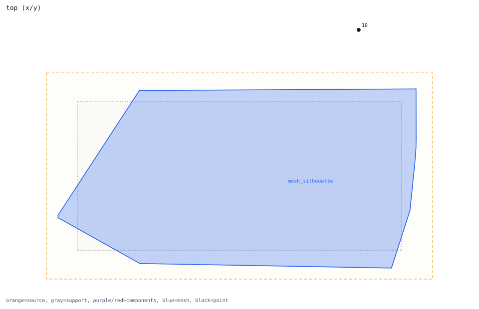
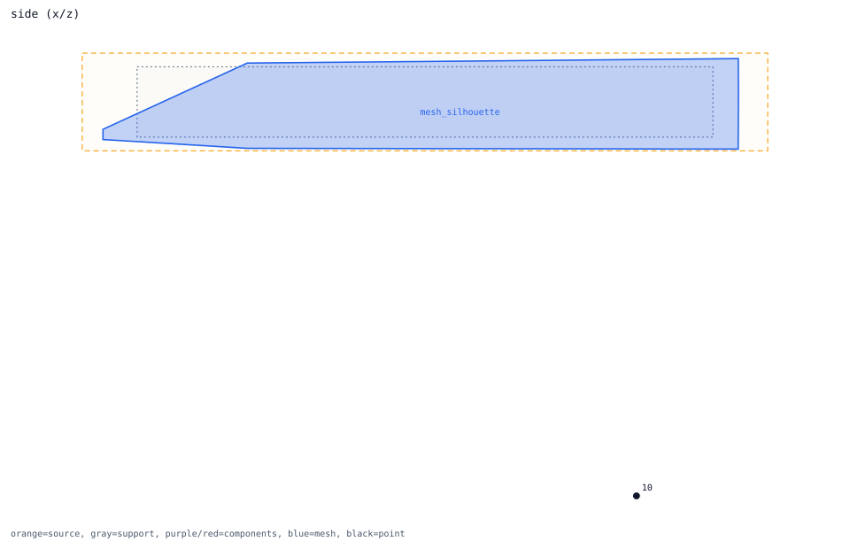
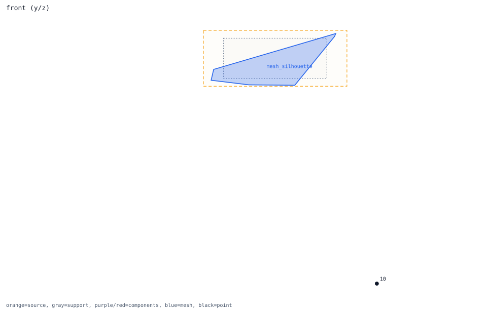

below_4m -> no_near_component_candidate
review point candidate
Review question
Does below_4m have a plausible outer-surface and component interpretation?
Look at
Compare the black point with the blue silhouette and any nearby red/purple component boxes.
Decision needed
Accept as diagnostic-only, add missing component candidates, or hold runtime use.
Trace Details
- point: below_4m at [0.0, 0.0, -4.0]
- nearest outer region: left_wing_root
- nearest outer distance: 2.892347 m
- nearest fine proxy: left_wing_root
- isolated candidate component: no_near_component_candidate
- nearest component: left_leading_edge_flap_actuator
- nearest component distance: 3.324154 m
- candidate component count: 0
- interpretation: outside_outer_shape_no_near_component_candidate_review_only


